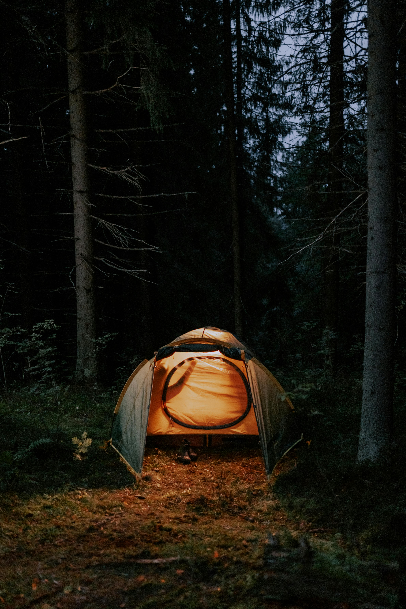
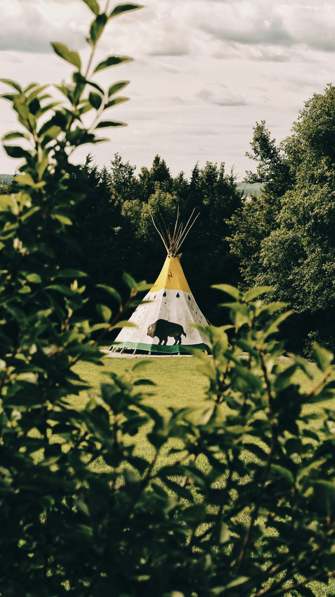
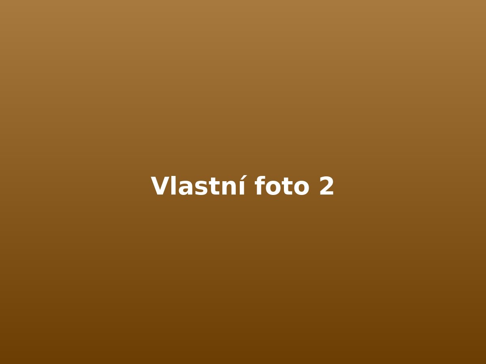
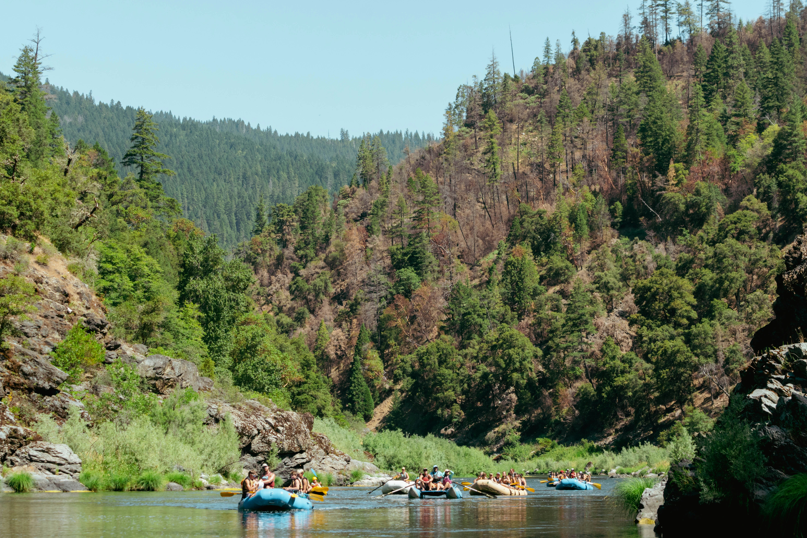

Vodák 2026
Letní voda pro přátele
Vodák 2026
Čtyři dny na Vltavě, pohoda na vodě, večery u ohně a pár dní, kdy se svět kolem na chvíli zpomalí. Tady najdeš všechny důležité informace na jednom místě.
Základní info
Akce
Víkendový vodák pro přátele a známé.
Termín
26.–30. června 2026
Splouvání 27.–30. června
Trasa
Vyšší Brod → Boršov nad Vltavou
Obtížnost
Vhodné i pro lidi bez zkušeností.
Styl akce
Pohodová voda, žádný závod, večer posezení.
Potvrzení účasti
Dej vědět přes formulář, ať máme přehled o lidech, autech a lodích.
Ubytování
Stan
- stan: 200 Kč / noc
- čím více lidí ve stanu, tím levněji vychází cena na hlavu
- orientačně při 2 lidech: 300 Kč / noc na hlavu
- orientačně za 4 noci: 1 200 Kč / osoba

Teepee
- pronájem teepee: 1 000 Kč / noc
- kapacita: až 12 lidí
- orientačně při plném obsazení: 283 Kč / noc na hlavu
- orientačně za 4 noci: 1 133 Kč / osoba

Plavidla
Kajak
Pro 1 osobu
- cena: 470 Kč / den
- orientačně celkem na hlavu: 1 880 Kč
Baraka
Pro 2 osoby
- cena: 550 Kč / den
- orientačně celkem na hlavu: 1 100 Kč
Raft
Pro 4 osoby
- cena: 1 050 Kč / den
- orientačně celkem na hlavu: 1 050 Kč
Raft XL
Pro 6 osob
- cena: 1 290 Kč / den
- orientačně celkem na hlavu: 860 Kč
Uvedené ceny jsou aktuální orientační ceny bez slevy. Předpokládám minimálně 10% slevu za věrnost a větší skupinu, takže finální částky mohou být ještě o něco nižší.
Program
26. června – příjezd
Příjezd večer do Ubytovna / Kemp Pod Hrází. Večer sraz, ubytování a příprava na vyplutí.
27. června – 1. den
Vyplutí v 10:00 z Vyššího Brodu. Cíl: Kemp U Fíka (Náhořany), přibližně 21 km.
28. června – 2. den
Pokračování do Kempu Krumlov, přibližně 17 km.
29. června – 3. den
Pokračování do Kempu U Kelta, přibližně 20 km.
30. června – 4. den
Doplujeme do Boršova – Kemp Poslední Štace, přibližně 12 km.
30. června odpoledne – odjezd
Předpokládaný odjezd z Boršova po obědě.
Co s sebou
Na vodu
- boty do vody
- náhradní suché věci
- opalovací krém
- pokrývka hlavy
- drobná lékárnička
- pláštěnka

Na večer a spaní
- spacák
- karimatka nebo matrace
- mikina / teplejší vrstva
- hygienické potřeby
- ručník
- dobrou náladu

Kempingové vybavení a zásoby budu převážet autem z kempu do kempu vždy ráno před vyplutím. Pokud tedy vyloženě nechceš, nemusíš všechno tahat na lodi. Díky tomu bude na lodi větší komfort a zároveň ušetříme i za občerstvení po cestě.
Z mojí zkušenosti nafukovací matrace zabere méně místa než karimatka a zároveň se na ní spí pohodlněji. Beru s sebou aku fukar, se kterým je matrace nafouknutá zhruba za minutu.
Na cennosti, které chceš mít na vodě po ruce, použij vodotěsný obal. Jestli nemáš, napiš mi. Třeba ještě budu mít nějaký na půjčení.
Doprava
Sraz
Sraz je 26. června večer v Ubytovna / Kemp Pod Hrází. Kdo nebude chtít dorazit už večer, může přijet i 27. června ráno před vyplutím.
Přesun a auta
Poprosím o informaci ve formuláři, jestli můžeš vzít auto nebo naopak potřebuješ odvoz. Podle toho doladíme dopravu tam i zpět.
Dotazy
Musím mít zkušenosti s vodou?
Nemusíš. Tahle varianta je plánovaná tak, aby ji zvládli i lidi, kteří nejsou zkušení vodáci.
Co když dorazím až 27. června ráno?
Je to v pohodě. Sraz je sice už 26. června večer, ale kdo chce, může dorazit až 27. června ráno před vyplutím.
Jak budeme řešit lodě a posádky?
Preference posádek a lodí posbíráme přes formulář a následně to doladíme ručně, ať to dává smysl.
Na kolik mě to tedy odhadem vyjde?
Počítej přibližně s cca 2 200 Kč za ubytování a vybavení. Zbytek je už hodně individuální a bude záležet hlavně na dopravě — tedy odkud jedeš, kolik lidí pojede v autě a jak se rozdělí palivo.
Další položkou bude to, kolik kdo utratí za jídlo a pití. Občerstvení podél řeky bývá zpravidla dost drahé. Pokud to chceš pojmout víc low cost, zaměř se hlavně na vlastní zásoby. Díky každodennímu převozu věcí autem a chladicím boxům to nemusí vyjít draze.

Kontakt
Organizátor
Jakub Kozlok
Kozlík / Moučný červ
Mobil
Potvrzení účasti
Vyplň prosím formulář, ať máme přehled o lidech, dopravě a posádkách.
Chceš jet s námi?
Potvrď účast přes formulář a pomoz nám doladit dopravu, lodě i organizaci.